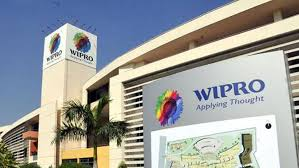

Western India Products Limited:
Wipro Limited is a provider of IT services, including Systems Integration, Consulting,
Information Systems outsourcing, IT-enabled services, and R&D services.[60]
Wipro entered into the technology business in 1981 and has over 160,000 employees and clients across
110 countries.[61] IT revenues were at $7.1 billion for the year ended
31 March 2015, with a repeat business ratio of over 95%.[62][63]
Wipro GE Medical Systems:
Wipro GE Medical Systems Limited is Wipro's joint venture with GE Healthcare South Asia. It is engaged in the research and development of healthcare products. This partnership, which began in 1990,[64] today includes gadgets and equipment for diagnostics, healthcare IT and services to help healthcare professionals combat cancer, heart disease, and other ailments.
There is complete adherence to Six Sigma quality standards in all products.[